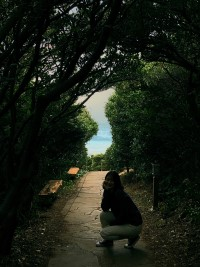
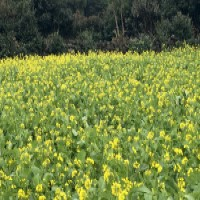

자연을 생각하는 제주 오설록 티 뮤지엄!
제주 서광 차밭과 맞닿아 있는 오설록 티 뮤지엄은 아모레퍼시픽이 차와 한국 전통차 문화를 소개하고, 보급하고자 2001년 9월에 개관한 국내 최초의 차 박물관입니다.
그 안에서 즐기는 오설록 녹차 아이스크림을 맛 보러 오세요.
세계적인 디자인 건축 전문사이트인 디자인붐이 선정한 세계 10대 미술관에 오를만큼 안팎으로 아름다운 풍광을 뽐내는 티뮤지엄은 연간 150만 명의 관람객이 방문하는 제주 최고 명소이자 문화 공간입니다.
제주 서귀포시 중문동에 있는 폭포.
중문관광단지 부근, 천제교(天帝橋) 아래쪽에 상·중·하의 3단 폭포로 이어져 있다. 천제연 제1폭포는 길이 22m, 수심 21m의 소를 이루며, 이 물이 흘러내려 다시 제2·제3의 폭포를 만든다. 폭포의 양안 일대에는 난대림지대가 형성되어 있어, 한국에서는 희귀식물인 송엽란(松葉蘭) · 담팔수(膽八樹) 등이 자생하며, 그 밖에도 여러 가지 상록수와 덩굴식물·관목류가 무성하게 어우러져 있다. 이 난대림지대를 보호하기 위하여 천연기념물 제378호로 지정하였고, 특히 이 계곡의 담팔수는 지방기념물 제14호로 지정되어 있다.
상세 정보
주소 : 제주 서귀포시 천제연로 132 천제연폭포관리소
영업시간
평일 09:00 - 18:00 일몰시간에 따라 변경될 수 있음
주말 09:00 - 18:00
가격표
일반 2,500원
청소년, 군경 1,350원
어린이 1,350원
남원큰엉해안

제주특별자치도 서귀포시 남원읍 남원리에 있는 해안 경승지. 남원읍내에서 서쪽으로 1km 떨어진 지점에 있다. 바닷가나 절벽 등에 뚫린 동굴을 제주특별자치도 방언으로 엉이라 하기 때문에 큰 바윗덩어리가 아름다운 해안을 집어삼킬 듯이 입을 크게 벌리고 있는 언덕이라는 뜻으로 붙여진 이름이다. SNS에서 한반도 모양의 포토존이 있는 곳으로 유명세를 타고 있다. 산책로를 따라 이동하다보면 제주 큰엉해안경승지길 끝쪽에 포토 스팟이 나와 많은 사람들이 찾고 있다.
상세 정보
주소 : 제주특별자치도 서귀포시 남원읍 태위로 522-17 큰엄전망대
유채꽃밭

제주의 상징과도 같은 꽃인 유채꽃은 2월쯤부터 피기 시작해 3월과 4월, 늦으면 5월까지도 제주 곳곳에서 유채꽃을 볼 수 있다. 푸른 바다를 배경으로 노란 유채꽃이 하늘거리는 모습은 제주에서만 볼 수 있는 최고의 봄풍경이다.